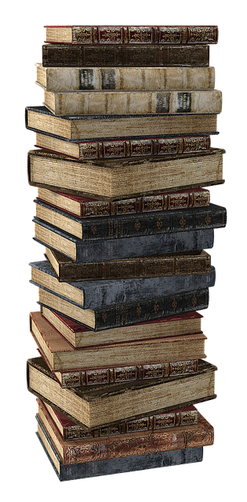

Welcome to my reading page!

Hi! I'm Maya, a fourth year at Northeastern University. One of my favorite hobbies is reading, which is something I have enjoyed doing since I was young and has remained one of my favorite hobbies ever since. I've created this site to share some facts about reading as well as information about the most popular books and genres, to help give you a sense of readers' changing habits and tastes over the years. I think that reading is a very valuable way of learning new information, and I would recommend picking up the hobby if you aren't already a reader to help broaden your horizons and learn new things. It is also a relaxing activity, so I would also recommend it to those who want a new way to relax and unwind after a long day. Finally, it is a great way to expand your vocabulary and become a more efficient writer, so anyone looking to improve their communication skills should consider reading more often (and reading more challenging, complex texts) to learn new vocabulary and incorporate it into their own work. I hope this page is useful, and check out my contact info below if you'd like to reach out!